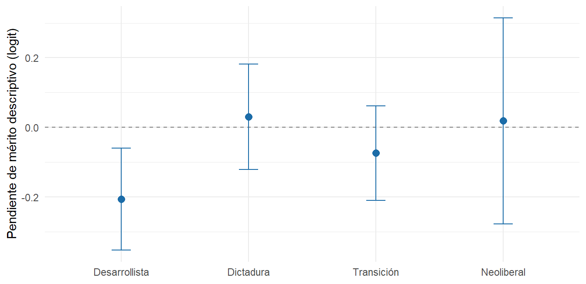
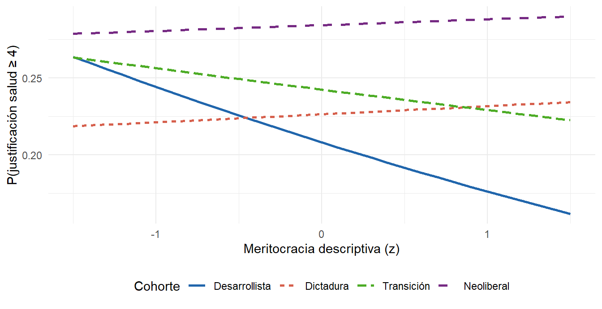

4.2 Modelos
| Predictor | OR (salud) | OR (educación) |
|---|---|---|
| Meritocracia descriptiva (z) | 0.93 | 0.97 |
| Particularismo (z) | 1.23*** | 1.24*** |
| Edad (z) | 1.22. | 1.16 |
| Escolaridad, años (z) | 1.22*** | 1.21*** |
| Religiosidad (z) | 1.03 | 1.00 |
| Mujer | 0.92 | 0.90 |
| Cohorte: Dictadura | 1.11 | 0.96 |
| Cohorte: Transición | 1.22 | 0.95 |
| Cohorte: Neoliberal | 1.53 | 1.24 |
| Ola 2009 (ref. 2019) | 0.88 | 0.83. |
Tres resultados sobresalen del modelo base y son consistentes en ambas esferas. El particularismo es el predictor más robusto: a mayor reconocimiento de barreras adscriptivas como vías para salir adelante, mayor justificación de la desigualdad (OR ≈ 1,23–1,24; p < 0,001). Se trata de un resultado contraintuitivo, pues cabría esperar que reconocer esas barreras erosionara la legitimación; más bien parece reflejar una visión resignada o naturalizada de un orden social percibido como inevitablemente jerárquico, antes que un juicio normativo favorable a esa jerarquía. La escolaridad opera en el mismo sentido: más años de educación se asocian a mayor justificación (OR ≈ 1,20; p < 0,001), en línea con la literatura que vincula el logro educativo con la internalización de marcos meritocráticos (Castillo, Laffert, et al., 2025). La edad muestra un efecto marginal en salud (OR ≈ 1,22; p < 0,10): a mayor edad, mayor tendencia a justificar la desigualdad sanitaria, lo que sugiere cierta aceptación del orden existente vinculada al ciclo de vida, aunque el resultado no alcanza el umbral convencional de significancia. La meritocracia descriptiva, en cambio, no alcanza significancia como efecto principal, lo que anticipa que su acción no es uniforme sino condicional a la cohorte de socialización.
Las cohortes más jóvenes tienden a justificar menos que la desarrollista (con efectos más nítidos en educación), y la ola 2009 muestra menor justificación que 2019 (OR ≈ 0,80; p < 0,01), consistente con la forma de U descriptiva. Los pseudo-R² son bajos, como es habitual en modelos de actitudes sobre datos individuales; se reportan sin maquillaje y se privilegia la interpretación de asociaciones por sobre la capacidad predictiva.
4.2.1 La meritocracia descriptiva como mecanismo moderado por cohorte
| Término | Coef. salud | Coef. educación |
|---|---|---|
| Mérito descriptivo (ref.: Desarrollista) | -0.207** | -0.146. |
| × Dictadura | 0.237* | 0.172 |
| × Transición | 0.133 | 0.139 |
| × Neoliberal | 0.226 | 0.173 |

Figura 4.2: Efecto marginal (pendiente logit) de la meritocracia descriptiva sobre la justificación de la desigualdad en salud, por cohorte. Barras: IC 95%.
El término de interacción confirma la hipótesis central, aunque de manera asimétrica entre esferas. En salud, el efecto de la meritocracia descriptiva cambia de signo a través de las cohortes: es negativo y significativo en la cohorte desarrollista (coef. ≈ −0,21; p < 0,01), donde mayor adhesión meritocrática se asocia paradójicamente a menor justificación, y se torna positivo en la cohorte de dictadura (interacción ≈ +0,24; p < 0,05), revirtiendo el sentido del efecto. La figura anterior visualiza esta inversión: la pendiente cruza el cero entre la cohorte más antigua y las socializadas bajo el régimen militar y la transición.
En educación, los coeficientes de interacción apuntan en la misma dirección pero no alcanzan significancia estadística. Esta asimetría sectorial es en sí misma un hallazgo a interpretar: sugiere que la desigualdad en salud, percibida como más directamente ligada a la vida y la urgencia, activa de modo distinto los marcos meritocráticos según la generación, mientras que la desigualdad educativa, objeto de un debate público más consolidado en Chile, responde a una lógica más homogénea entre cohortes.
Para complementar la interpretación de los odds ratios, la figura siguiente traduce los coeficientes del modelo de interacción en probabilidades predichas de ubicarse en las categorías altas de justificación (≥ 4) en función del nivel de meritocracia descriptiva, manteniendo el resto de los predictores en sus medias estandarizadas.

Figura 4.3: Probabilidad predicha de alta justificación de la desigualdad en salud (categorías ≥ 4) según meritocracia descriptiva y cohorte. Predictores de control fijados en sus medias.
La figura evidencia con claridad la inversión del efecto entre cohortes. En la cohorte desarrollista, mayor meritocracia descriptiva se asocia a una menor probabilidad de alta justificación: pasar de −1 a +1 desviación estándar reduce esa probabilidad en aproximadamente 4 puntos porcentuales. En la cohorte de dictadura, el efecto se invierte: la misma variación en meritocracia descriptiva aumenta la probabilidad de alta justificación en cerca de 3 puntos. Las cohortes de transición y neoliberal muestran pendientes positivas similares a la de dictadura, aunque con mayor incertidumbre dado su menor tamaño muestral en las olas disponibles. Esta representación en probabilidades hace visible la magnitud sustantiva de la interacción, que en términos de odds ratios podría parecer modesta.
En conjunto, los modelos sostienen una lectura integrada: la justificación de la desigualdad en Chile se explica de forma robusta por el reconocimiento naturalizado de barreras adscriptivas y por el logro educativo, mientras que el discurso meritocrático descriptivo opera como un mecanismo dependiente de la cohorte, cuya dirección se invierte entre quienes se socializaron antes del quiebre democrático y quienes lo hicieron bajo la dictadura y la transición. La fragilidad de algunas estimaciones (significancia marginal, asimetría entre esferas, baja consistencia interna del índice descriptivo) se reconoce abiertamente y orienta la discusión hacia la necesidad de replicación con más olas.